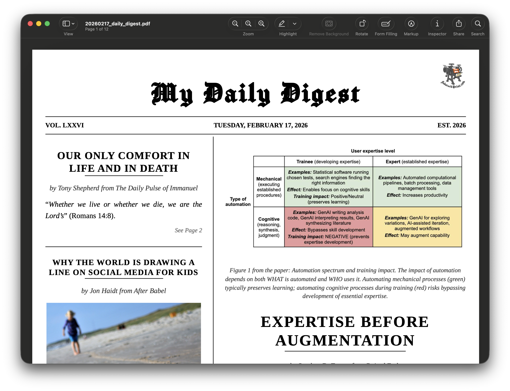

Building a Daily Digest Bot: Automating Substack to PDF

Why I Built This
Let’s face it. The digital world is growing more complex and attention-seeking. That’s why I love places like Substack. It’s a corner of the internet where longer-form content continues to live on, but also a place with the flexibilty to curate your reading to feature writers you enjoy. It usually takes at most 10 seconds (often less) to watch a reel, but for a Substack article, you have to dig your heels in and enter their conversation. Rarely have I read a Substack article from a writer I enjoy and thought to myself afterwards, “I think I just caved to brain rot.”
Lately, I’ve noticed a shift though. As I subscribe to more and more writers, my feed also propogates with more and more ‘notes,’ most of which are suggested from people whom I do not subscribe to. To put it bluntly, I’ve pretty much determined that notes on Substack are eerily similar to tweets, and I honestly hate that. It feels as though Substack is becoming a writing-oriented version of Twitter (now X).
Instead of yielding to the developers of Substack and accepting this change on the platform, or evading Substack entirely, I have found a way to indulge myself in (free) articles by the writers I enjoy, without even logging onto the app, or going on substack.com. As a matter of fact, I’ve deleted the app from my phone (I have no app store and can’t download apps without a password my wife and friends have). My alternative to Substack is utilizing a print version of the app, and going analog with Substack.
This is why I built my daily digest bot, which fetches my feed (of articles, and not notes) from the last 24 hours and compiles them into a PDF at 6:30am every morning. I share this post to help others with technical background escape the temptation to doomscroll our beloved Substack.
How I Did It: The Technical Stack
Building the daily digest was an exercise in stringing together a few very cool tools. The entire workflow is orchestrated in R, connecting a custom feed parser, a third-party print service, and a containerized cloud deployment into a single automated pipeline.
I wanted a hands-off system that would automatically figure out what I’m subscribed to, find the newest articles, format them elegantly, and email them to me. (If you want to jump straight to the full source code, you can find the complete project repository on my GitHub here: https://github.com/carsonslater/dailydigest
Here is a breakdown of the four main pillars of the project:
1. Extracting the Subscriptions (The OPML Export)
The first challenge was getting a dynamic list of every publication I’m subscribed to. If you are not familiar, most blogs and newsletters have an RSS feed—a standardized way to distribute content behind the scenes. However, Substack doesn’t offer a clean, native way to export your reading list as a compilation of these RSS feeds.
To solve this, I used a brilliant JavaScript snippet by Les Orchard, which runs directly in the browser console. It scrapes your Substack reader interface and outputs a standard OPML file.
OPML (Outline Processor Markup Language) is essentially just a structured address book for RSS feeds. It contains the exact htmlUrl for all of your subscriptions in one tidy XML document. By keeping this OPML file in my project directory (substack_subscriptions.opml), the R script can just parse the file to get the URLs. This means I can add new subscriptions seamlessly in the future by just regenerating the OPML file, without ever touching the core R code.
# Snippet from daily_digest.R
library(xml2)
opml_path <- "substack_subscriptions.opml"
opml <- read_xml(opml_path)
opml_links <- xml_find_all(opml, "//outline[@type='rss']") %>%
xml_attr("htmlUrl") %>%
keep(~ !is.na(.x))2. Parsing Feeds & Filtering in R
Once I had the list of Substack URLs from the OPML file, the script iterates through them to check the corresponding RSS endpoints (/feed).
Using the xml2 and lubridate packages in R, the script reaches out to the RSS endpoints for every publication and downloads the raw data of the feed. It then extracts the individual articles (stored as <item> blocks) and filters the results based on the published date (<pubDate>). Instead of downloading everything, it keeps only the posts that have been published within the last 24 hours. This ensures that I only pull the newest content, creating a highly curated, manageable queue of fresh article URLs that are ready for printing.
rss <- read_xml(rss_url)
items <- xml_find_all(rss, ".//item")
for (item in items) {
pub_date_str <- xml_text(xml_find_first(item, ".//pubDate"))
pub_date <- parse_date_time(pub_date_str, "a d b Y H M S")
if (!is.na(pub_date) && pub_date >= threshold_date) {
post_link <- xml_text(xml_find_first(item, ".//link"))
all_post_urls <- c(all_post_urls, post_link)
}
}3. Rendering via Substackprint.com
Converting standard HTML into a clean, printable PDF is notoriously tricky—especially when dealing with massive, oversized images and weird formatting across various newsletters. Initially, I experimented with complex typesetting engines locally, but that resulted in massive styling headaches.
Instead, I decided to lean on Substackprint.com. It’s a fantastic, specialized tool designed specifically to strip away the digital clutter from Substack posts and elegantly compile them into a beautiful, newspaper-style PDF.
To automate this without manually copying and pasting URLs every morning, my script passes the filtered lists of Substack URLs directly to Substackprint’s generator using the {chromote} package.
{chromote} acts as a headless browser—meaning it can run Google Chrome in the background without actually popping up a window on your screen, controlled entirely by code. The script uses this invisible browser to load Substackprint, click the “Multi-Publication mode” button, inject my curated list of URLs into the text box, and click the “Go Analog!” submit button.
Once Substackprint finishes rendering the newspaper on the page, the headless browser captures the final layout and uses Chrome’s native built-in PDF generator to save the gorgeous digest directly to my local drive.
# Snippet from helpers/pdf_generator.R
library(chromote)
b <- ChromoteSession$new()
# Navigate to tool and inject URLs
b$Page$navigate("https://substackprint.com/")
b$Runtime$evaluate("document.getElementById('pub-mode-multi').click();")
urls_string <- paste(post_urls, collapse = "\n")
b$Runtime$evaluate(glue(
"document.getElementById('substack-urls').value = `{urls_string}`;"
))
# Generate and save PDF
b$Runtime$evaluate("document.querySelector('#substack-form button[type=\"submit\"]').click();")
# ... polling to wait for generation ...
pdf_data <- b$Page$printToPDF(printBackground = TRUE, marginTop = 0, marginBottom = 0)
writeBin(jsonlite::base64_dec(pdf_data$data), output_path)4. Automated Email Delivery
Generating a beautiful PDF is great, but to make this a true “daily digest,” I needed it to arrive in my inbox automatically while I was waking up.
For email delivery, I used the {blastula} package in R. {blastula} makes it incredibly easy to compose an email body, attach the compiled PDF, and securely dispatch it via SMTP.
SMTP (Simple Mail Transfer Protocol) is the standard protocol that email servers use to send messages across the internet. By plugging in my email provider’s SMTP credentials directly into the script, R can securely send the email attachment just as if I were logging into Gmail myself.
# Snippet from helpers/email_sender.R
library(blastula)
email_obj <- compose_email(
body = md("Here is your favorite Substack writer's latest work..."),
footer = md("Generated via substackprint.com and R automation.")
)
email_obj <- add_attachment(email_obj, file = pdf_path)
smtp_send(
email = email_obj,
from = config$email$from,
to = config$email$to,
credentials = creds_envvar(...)
)5. Containerization and Deployment
A daily digest isn’t very useful if I have to run the R script manually every morning. The final piece of the puzzle was scheduling this automation to run autonomously.
If I simply moved my code to another machine, it might fail because that hardware lacks the exact version of packages or software I had on my personal laptop. To solve this, I packed the entire project—the R dependencies, the OPML file, and the core scripts—into a Docker container. You can think of a Docker container as a mini, virtualized computer that wraps up the code and all its exact dependencies so it runs identically anywhere.
Because {chromote} requires a headless browser to generate the PDF via Substackprint, the container cannot just run R; it must also have Google Chrome fully installed. When I built the Dockerfile, the trickiest part was ensuring the system dependencies were perfectly configured to run Chrome invisibly without sandboxing errors.
Here is the crux of the Dockerfile that makes this all possible:
# Start with a standard base R image setup
FROM rocker/tidyverse:latest
# Install Linux system dependencies for `{blastula}` (crypto, SSL) and `{xml2}`
RUN apt-get update && apt-get install -y --no-install-recommends \
wget gnupg libxml2-dev libssl-dev libcurl4-openssl-dev \
zlib1g-dev libfontconfig1 libxt6 && rm -rf /var/lib/apt/lists/*
# Download and install Google Chrome explicitly for `{chromote}` to use
RUN wget -q -O - https://dl-ssl.google.com/linux/linux_signing_key.pub | apt-key add - \
&& echo "deb [arch=amd64] http://dl.google.com/linux/chrome/deb/ debian main" > /etc/apt/sources.list.d/google-chrome.list \
&& apt-get update && apt-get install -y --no-install-recommends \
google-chrome-stable && rm -rf /var/lib/apt/lists/*
# Copy project files and install target R packages via setup.R
WORKDIR /app
COPY . .
RUN Rscript setup.R
# Crucial Environment Variables: Tell `{chromote}` exactly where to find Chrome
# and disable the sandbox so it can execute smoothly inside a Docker container
ENV CHROMOTE_CHROME=/usr/bin/google-chrome-stable
ENV CHROMOTE_CHROME_ARGS="--no-sandbox --disable-dev-shm-usage --headless"
# Point the container entry command to the target script
CMD ["Rscript", "daily_digest.R"]The real “aha!” moment is the bottom section with ENV CHROMOTE_CHROME_ARGS. Because Docker containers isolate their processes, running an entire browser inside them can lead to bizarre memory allocation issues and permission errors. Flags like --no-sandbox and --disable-dev-shm-usage are critical requirements to keep the invisible browser from crashing during the heavy lifting of the PDF generation step.
For the actual deployment, I repurposed a spare, headless Mac Mini provided by my job. Rather than running a persistent daemon inside the container, I let the host machine handle the scheduling. I set up the Mac Mini’s local cron tab to run a simple shell task at 6:30 AM every morning that executes docker run on my image. The container spins up, does its job, and gracefully exits. To ensure the Mac Mini doesn’t inadvertently go to sleep and skip the cron job, I keep it perpetually awake using the macOS caffeinate terminal command.
Now, when the morning alarm finally goes off, the Mac Mini spins up the lightweight container, Chrome renders the PDF via Substackprint in the background, and {blastula} shoots the final product straight to my email inbox. It’s completely hands-off—allowing me to wake up, check my email, and have a beautifully formatted, highly curated newspaper waiting for me!
I hope you enjoyed this post. If you’re interested in contributing, you can open up a pull request on my GitHub here: https://github.com/carsonslater/dailydigest, or you can send me an email.